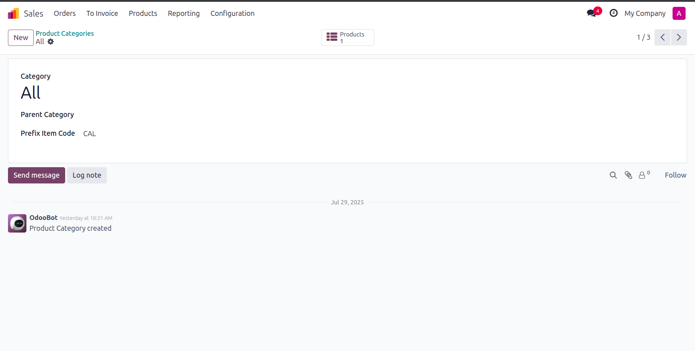
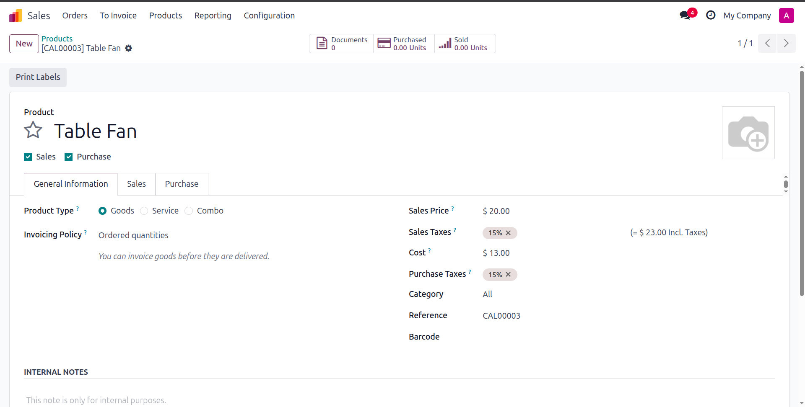

Streamline your inventory operations with our Auto Product Code Generator for Odoo 18. Automatically generate product internal references based on category-specific prefixes ensuring consistency, accuracy, and efficiency in your inventory.

Set a unique prefix and sequence for each product category. This helps organize your product codes according to the business logic and ensures consistent structure across your inventory.

When a product is created and its category is selected, the internal reference is automatically populated based on the category's prefix and the current sequence number. This reduces manual work and prevents duplication.